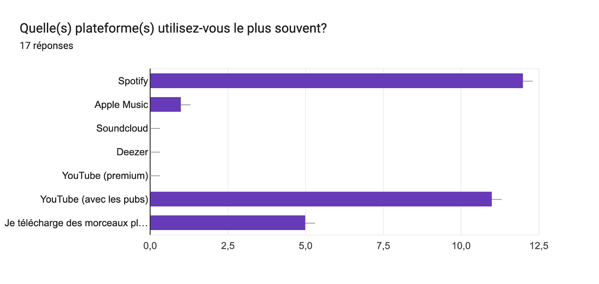
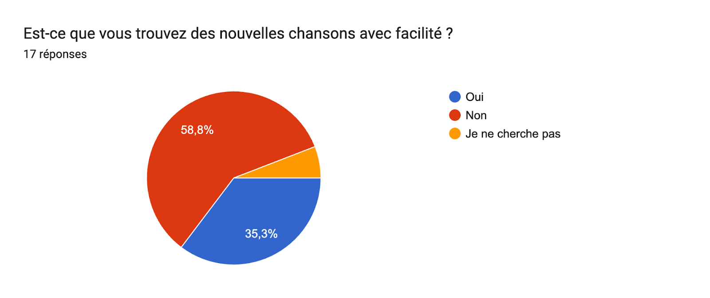
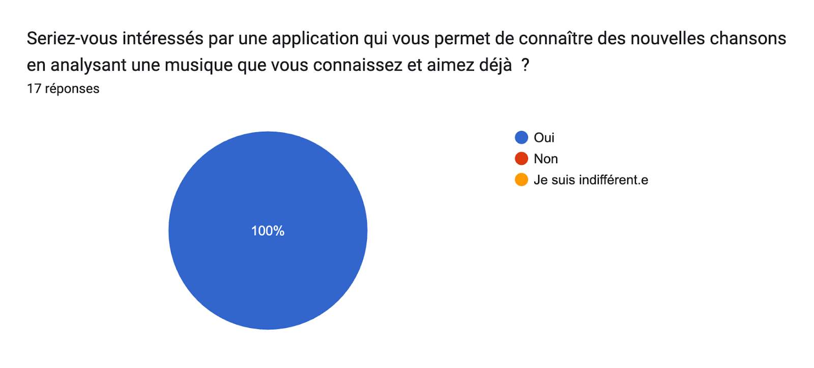
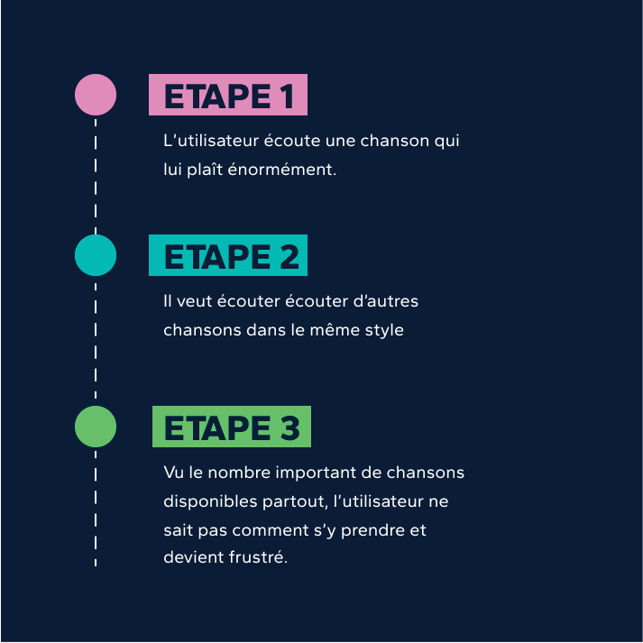
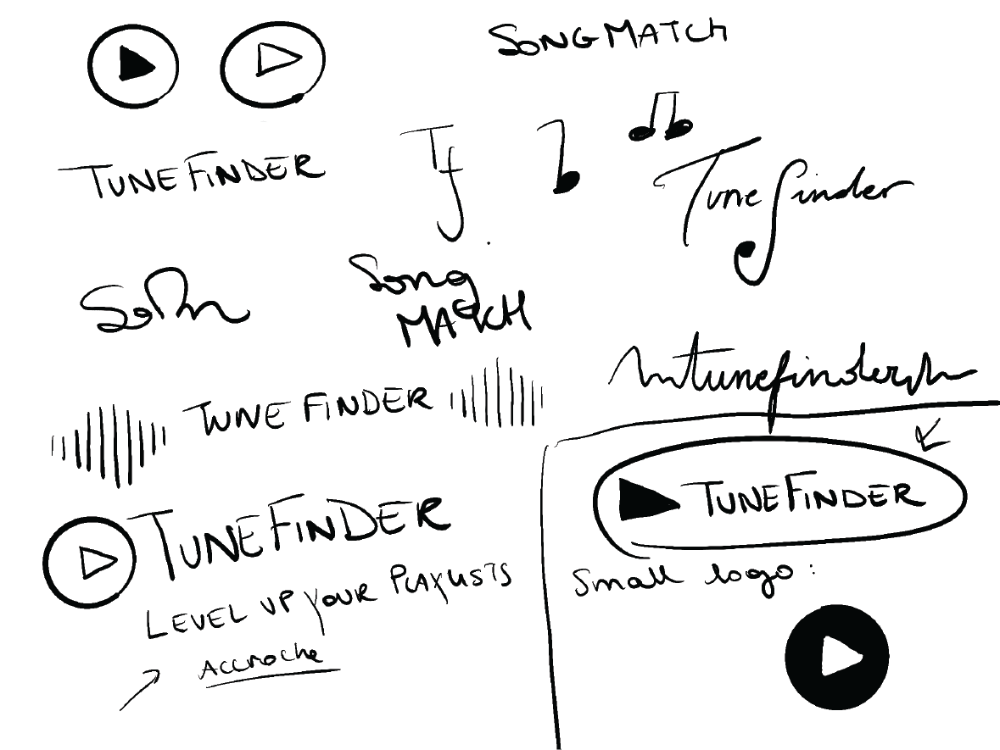
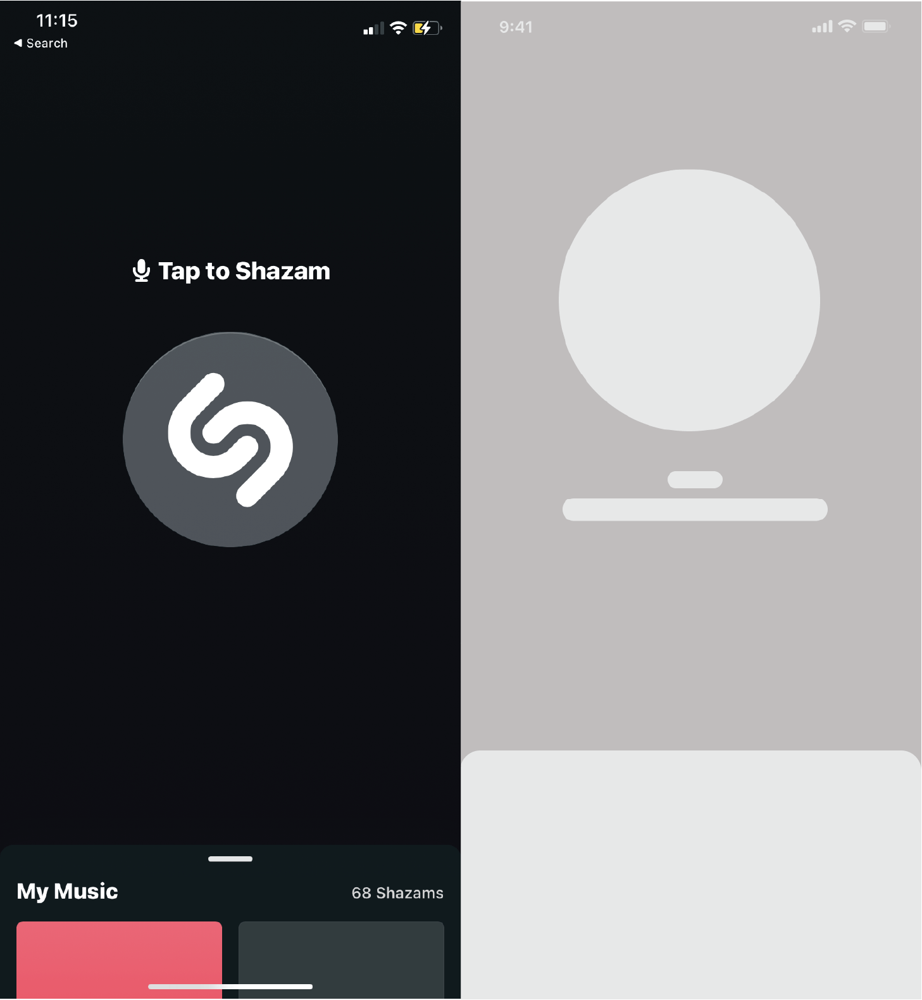
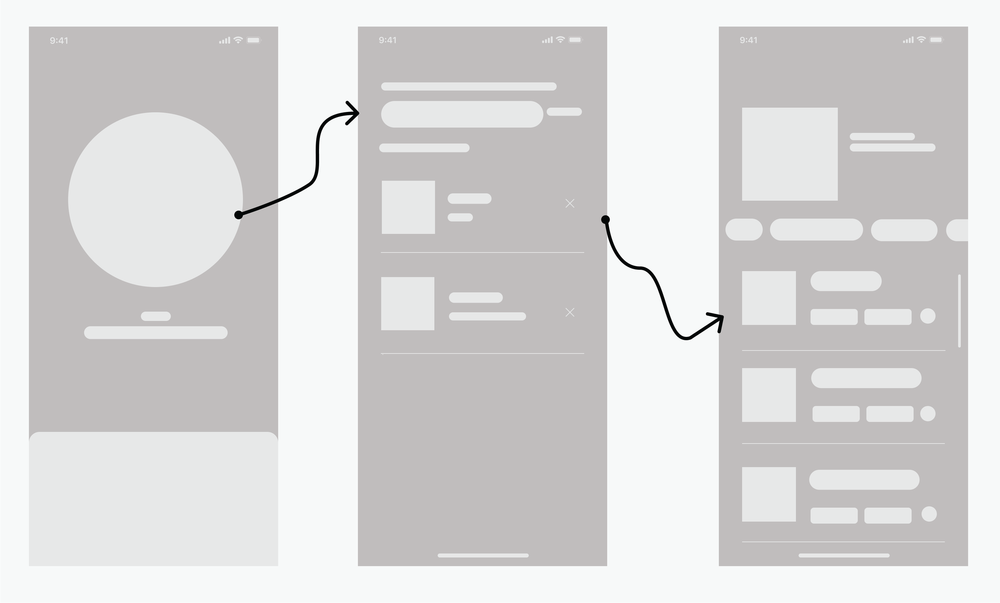
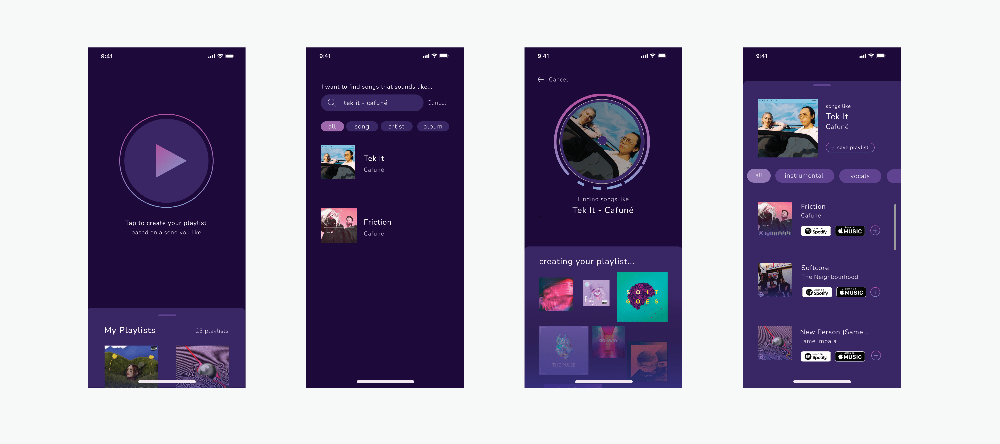
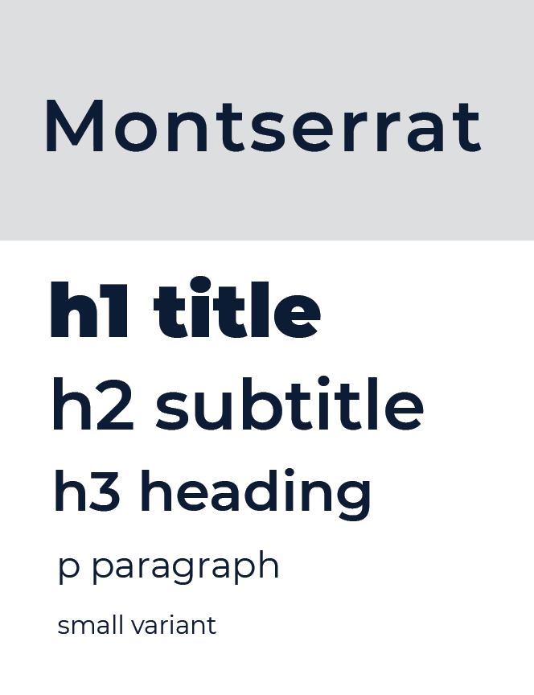
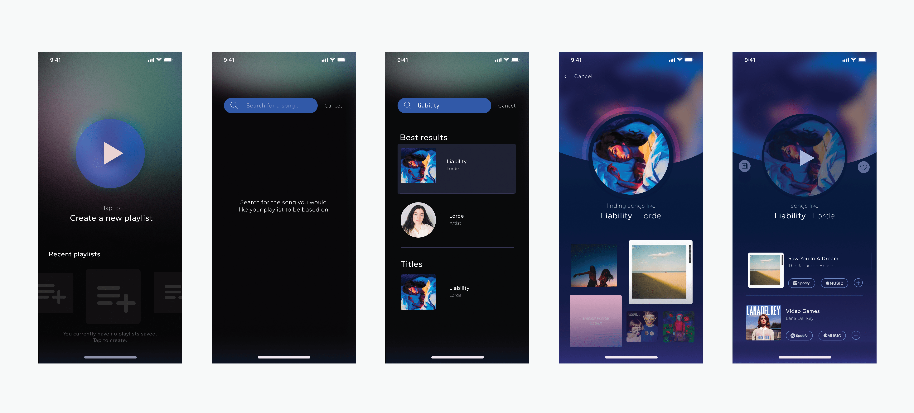

Case Study
Le projet
Dans le cadre du travail de fin d’année, il m’a été demandé d’imaginer une application, un service, et de formuler des hypothèses par rapport au développement de cette idée. Voici comment je m’y suis prise.
Pas la première fois.
Dans le cours de mon deuxième essai de la deuxième année, je me suis dit que cette fois, j’allais tout donner.
En effet, pour ce qu’il en est de juin et août 2021, je n’ai pas réussi à rendre mon projet, suite à une année difficile dû au virus qu’on connaît tous. Mais cette année, c’était la bonne, comme on se dit à chaque fois.
J’ai commencé le projet par suivre les cours normalement, la tête haute, déterminée. Jusqu’à ce que, malheureusement, j’ai été victime d’un évènement assez violent qui a eu énormément d’impact sur ma santé physique et mentale. Ceci a fait que j’étais incapable de suivre les cours depuis mi-avril 2022. Et à la fin, entre les nuits passées aux urgences à l’hôpital, les heures dans les commissariats de police et le reste des problèmes de la vie, je n’ai, encore une fois, pas su rendre mon TFA en juin 2022.
Extrêmement découragée, j’étais sur le point de lâcher mes études. Je ne voyais plus l’intérêt de continuer dans ces conditions. Heureusement, avec le soutien de ma famille et certains amis, j’ai décidé que je devais m’accrocher au peu de courage et d’espoir qui me restait pour au moins essayer. Et cette fois, je le rends.
Le début.
Je n’avais strictement aucune idée de ce que je voulais faire comme projet.
Alors, étape par étape, je me suis rendue compte que j’avais besoin de trouver un problème pour créer sa solution. J’observe, je veille, mais tout a été fait, refait, et surtout, rien ne m’inspirait.
Jusqu’à ce qu’un jour, lorsque je ne faisais rien à part écouter de la musique, je l’ai trouvée. La chanson parfaite, avec la progression d’accords parfaite, un BPM parfait, avec une instru parfaite pour mon humeur à ce moment là.. C’était ce genre de musique qu’il me fallait. Ce qu’il me fallait juste après, c’est encore plus de chansons comme ça.
Je me tourne alors vers la fonctionnalité Radio de Spotify. Si vous n’utilisez pas Spotify, vous en avez sûrement déjà entendu parler. C’est une fonctionnalité qui permet à l'utilisateur de trouver des chansons similaires à une chanson spécifique.
Alors j’appuie dessus. La playlist est chargée, elle apparaît. J’écoute les chansons, une par une.
Aucune d’entre elles n’était similaire à celle de départ.
Et ça m’était déjà arrivée plusieurs fois. Les chansons dans la Radio ne me plaisent jamais. Mais pourquoi ?
Après avoir fait des recherches, j’ai appris que l’algorithme de Spotify fonctionne de sorte à recommander des chansons basées sur ce que les utilisateurs écoutent – lorsque vous allez lancer la Radio d’une chanson, les musiques qui apparaissent sont basées sur celles qui la suivent dans des playlists déjà créés par les utilisateurs de la plateforme.
Mais moi, je voulais une chanson vraiment similaire à celle qui m’avait plu, pas similaire à ce que les autres fans écoutent.
Oh, tiens. Voilà, mon idée de projet.
Une (bonne) idée ?
Peut-être que je me trompe et qu’en fait je suis vraiment la seule qui n’a pas eu une excellente expérience avec cette fonctionnalité. Après tout, Spotify est connu pour leur algorithme hyper poussé.
Alors, tenant à mon idée quand même, j’ai partagé un Google Forms, ce qui allait me permettre de tester cette hypothèse.
La recherche utilisateur
La plupart des personnes ayant répondu utilisent Spotify.
Et, la plupart n’arrive pas à trouver des chansons facilement.
Donc je tenais un public qui non seulement n’arrivait pas à trouver des nouvelles chansons, mais qui en plus étaient intéressés par une application qui le ferait pour eux.
Après ce questionnaire, j’ai continué à interviewer des personnes qui utilisent Spotify et le retour que j’avais le plus souvent était qu’effectivement, je n’étais pas la seule à trouver que la Radio Spotify n’était pas super efficace.
Il ne restait plus qu’à me lancer !
Le MVP
L’application sera alors un générateur de playlists basées spécifiquement sur la chanson elle-même.
Le fonctionnement
Là où l’algorithme de Spotify fonctionne sur les données de l’utilisateur, mon application fonctionnerait avec un algorithme entièrement basé sur l’analyse des chansons en elles-mêmes.
J’ai imaginé un algorithme qui découperait la chanson choisie en différentes pistes, pour ensuite les analyser et aller chercher dans une base de données de millions de chansons celles qui se rapprochent le plus de chaque piste.
Un exemple du problème principal que j’essaie de résoudre:
Le but de mon application sera alors de lui rendre la tâche plus facile:

Mais comment est-ce que les playlists seraient générées ?
Mon idée était basée sur le fait que l’utilisateur pourrait choisir entre le BPM, les vocaux, la progression d’accords, l’instrumental ou tout en même temps pour affiner ses recherches.
J’ai ensuite refait un deuxième test afin d’avoir des nouveaux retours sur la progression de l’idée.
Les points faibles
L’idée plaisait à beaucoup de personnes, puisque la grande majorité de mon entourage utilise Spotify et écoute de la musique en général. Seulement, plusieurs questions m’ont été posées auxquelles je ne connaissais pas encore les réponses:
- “Comment est-ce que l’application ferait pour séparer les chansons en plusieurs pistes ?”
- “Est-ce que ce n’est pas trop spécifique comme idée ?”
- “Est-ce que le progrès actuel de la technologie permettrait une analyse aussi profonde ?”
Donc je me suis remise à penser. Est-ce que c’est vraiment une application qui, dans l’éventualité où elle serait lancée, ne ferait pas de succès ?
L’algorithme et les IA
L’idéal serait que l’algorithme puisse décortiquer les différentes pistes d’une chanson, les analyser, et les associer avec d’autres pistes similaires dans d’autres chansons afin d’avoir le résultat le plus précis possible.
Tout ça m’avait l’air un peu compliqué, mais c’est peut-être aussi parce que les IA ne sont pas dans mes spécialités. J’ai alors fait des recherches.
Un type d'algorithme similaire existe déjà, et est utilisé dans un produit lancé en 2021; le Stem Player. C’est un appareil qui permet de remixer des chansons en les séparant en quatre pistes différentes, avec une possibilité de loop et de réglage du volume de chaque piste.
J’ai également trouvé quelque chose de plus intéressant encore; un programme qui disait justement découper précisément n’importe quel morceau en différentes pistes sans perdre de qualité: Lalal.ai
Et j’ai trouvé plein de programmes différents qui disaient faire la même chose, mais aucun qui proposait une idée d’utiliser cette technologie pour la découverte et le rassemblement de chansons similaires.
Le marché
“Est-ce que ce n’est pas trop spécifique comme idée ?” Peut-être bien.
Il est connu que, dans le monde d’aujourd’hui, tout doit être rapide et efficace. Avec la prominence d’applications comme TikTok ou l’apparition de fonctionnalités telles que les Reels sur Instagram ou les Shorts sur YouTube, la consommation de contenu va plus vite que jamais et l’attention des utilisateurs est de plus en plus difficile à capter. Alors la question se pose; est-ce que l’utilisateur moyen prendra la peine d’ouvrir une application servant d’extension à son application musicale préférée uniquement dans le but de générer des playlists alors qu’en soi, Spotify le fait déjà ? Certes, ce seraient des playlists beaucoup plus précises, mais est-ce que ça vaut le temps que ça prend ?
C’est une question qui malheureusement, n’a pas forcément de réponse. Il y en a qui disent que oui, d’autres disent qu'ils n'en prendraient pas la peine, et que peut-être l’utiliseraient une fois, puis finiraient inévitablement par la désinstaller. Mais d’un autre côté, cette technologie existe bien, sans forcément être exploitée à son potentiel maximal.
Donc, contre tous les points négatifs et la possibilité d’échec, j’ai quand même décidé de conceptualiser l’application.
Le nom et le logo
Il fallait que je trouve un nom accrocheur et un logo. J’ai pas eu beaucoup de mal pour cette partie-ci, je savais que je voulais quelque chose de simple et d’assez évident.
Je suis alors restée sur “Tunefinder: level up your playlists.”
Le premier prototype
Afin de conceptualiser le premier prototype, j’ai fait beaucoup de veille. Avant même de réfléchir à la sélection de couleurs ou à la typographie, je me suis demandée ce qui faisait une bonne application musicale.
Il fallait que je fasse attention à la hiérarchie des éléments, et avoir une navigation assez fluide. Beaucoup de bords arrondis, voire même des cercles à la place de rectangles.
De plus, les tons sont globalement sombres, avec une touche de couleur assez éléctrique, beaucoup de dégradés dans les tonalités de mauve, rose et bleu.
Avec le mauve symbolisant entre autres la créativité, le bleu l’inspiration et le rose l'engouement, je comprends bien pourquoi ces couleurs là apparaissent souvent.
Il était alors temps d’imaginer le squelette de ma page d’accueil. Qu’est-ce que je voulais dessus ? Comment est-ce que les éléments devraient être placés ? Quel élément devait attirer l’attention en premier ?
Bien sûr, je n’avais qu’une seule fonctionnalité pour l’instant; créer des playlists. J’ai alors pensé à Shazam, qui n’a vraiment qu’une fonctionnalité majeure et qui a une interface simple et efficace. Ce serait une bonne base sur laquelle commencer.
Le bouton principal servirait à lancer la création de playlists, et l’utilisateur pourrait soit appuyer sur ce dernier, soit faire glisser la section inférieure afin d'effectuer une recherche. C’était un bon début.
J’ai ensuite ajouté les autres pages.
J’avais alors le squelette de mon MVP.
Après avoir effectué quelques tests, j’ai essayé de mieux visualiser mes éléments en ajoutant du contenu. J’ai également ajouté une page qui servirait de page de chargement.
Je n’étais cependant pas satisfaite. Il manquait quelque chose, et, surtout, c’était un peu trop copié-collé. Je me suis alors dit qu’il serait intéressant pour l’utilisateur d’avoir accès à ces playlists récentes lors du lancement de l’application. Après avoir joué un peu avec la mise en page, j’en suis arrivée à quelque chose d’assez satisfaisant.
Pouvoir scroller horizontalement pour visualiser ses playlists récentes, et cliquer dessus engendre une autre page.
J’ai également commencé à réfléchir et je me suis rendue compte que je n’aimais pas les couleurs, et que le tout était juste un peu trop simple, pas assez personnel. Il fallait que je réfléchisse également à la police.
J’ai alors totalement changé de direction.
Une idée m’est venue en tête: utiliser la couverture d’album de chaque chanson comme le fond de la page. Ensuite, j’ai décidé d’utiliser des couleurs plus calmes pour les pages générales. Je commençais alors à être satisfaite du design.
Le test du MVP a été un succès. La navigation était bien intuitive, les couleurs plaisaient. Je devais juste faire quelques ajustements d’alignement et de taille de typo.
La version finale et les fonctionnalités en plus
J’ai alors commencé à designer ce que je voulais ajouter: une page de connexion avec Spotify ou Apple Music, une page d'inscription à partir d’un e-mail, une page profil et une possibilité de sauvegarder et partager les playlists. J’ai également designé les pages d’erreur (manque de connexion, aucune chanson trouvée…)
La vidéo
Dans le but de remplir tous les critères, je devais produire une vidéo qui illustre mon processus lors de la réalisatioin du projet. Vous pouvez la visionner ici
Qu’est-ce que je pourrais améliorer ?
J’ai eu par après, d’autres idées qui pourraient améliorer l’application:
- Afin de régler le problème du manque d’intérêt de l’utilisateur, j’ai imaginé une fonctionnalité qui lui recommande tous les jours une nouvelle chanson basée sur les chansons qu’il a découvert et sauvegardé.
- Dans la même optique, une fonctionnalité qui, au lieu de recommander une chanson, fait passer à l’user un mini test afin de savoir dans quelle humeur il est et lui recommander une chanson basée sur ça en plus de ses anciennes découvertes.
- Ajouter une possibilité de se connecter avec Google.
Un projet assez exigeant.
Ce projet a été sans aucun doute le plus difficile que j’ai jamais entamé. Non seulement à cause de tous les obstacles que j’ai dû surmonter afin de pouvoir le rendre à temps, mais également parce qu’il fallait que je pousse mes limites. Que ce soit au niveau du code, au niveau du design ou même au niveau de la gestion du temps, je me suis surpassée.
Il y a beaucoup de choses dans ce projet que j’aurais aimé améliorer ou peaufiner si le temps me le permettait, mais je pense que je peux quand même le rendre en me disant qu’effectivement, cette fois, j’ai essayé.